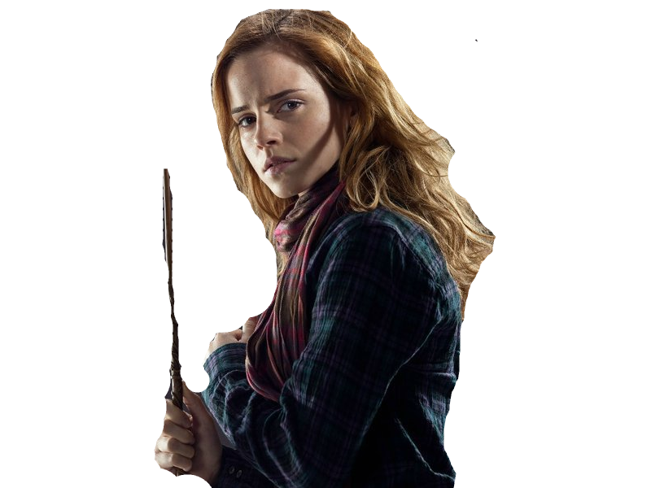
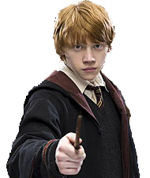

-
Harry Potter
Casa: Grifinória

Descrição
Ele é um bruxo, filho único de Tiago Potter e Lílian Evans Potter, considerado um dos mais famosos bruxos dos tempos modernos e o aluno mais famoso da Escola de Magia e Bruxaria de Hogwarts. Ficou famoso por ter sido o único sobrevivente da Maldição da Morte, quando Lord Voldemort tentou assassiná-lo ainda bebê.
-
Hermione Granger
Casa: Grifinória
Descrição
Hermione possuí uma mente acadêmica brilhante e se provou uma estudante talentosa em quase todas as matérias que estudou, a ponto de ser considerada à Casa Corvinal quando classificada pelo Chapéu Seletor. No entanto, sua disposição cética e lógica foi uma das características que o fez mudar de ideia.
-
Rony Weasley
Casa: Grifinória
Descrição
Monitor; Goleiro; Auror; Tesoureiro do F.A.L.E. Nascido em 1º de março, Rony Weasley é alto, magro, narigudo e cheio de sardas. Melhor amigo de Harry Potter desde que o a caminho do primeiro ano em Hogwarts, os dois dividem o mesmo dormitório na Grifinória.